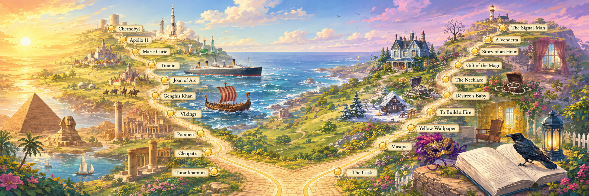

Fifty-eight of the shortest, sharpest stories ever written — a few pages each, and they don't leave you.
Some stories take ten minutes to read and ten years to finish thinking about. This series gathers fifty-nine of them — a fired church verger, a peasant racing the sun for land, a prisoner who throws away a fortune, a borrowed necklace that costs a decade, a painted leaf that refuses to fall, a nightingale who dies for someone else's love, two old enemies pinned beneath the same tree, and a signalman haunted by a warning he cannot read, and a servant who flees Death only to keep his appointment with her. Maugham, Tolstoy, Chekhov, Borges, Chopin, Maupassant, O. Henry, Poe, Joyce, Wilde, Mansfield, Twain, Saki, Dickens, Conan Doyle, Glaspell, Mérimée, Gilman, London, Kafka, Andersen, Kipling, Stevenson, Wells, Bierce, Stoker, Forster, Connell, Harvey, O'Flaherty, Lawrence, Hawthorne, Irving and Pushkin — each writer at the very top of their craft.
Each one turns on its final sentence. And each becomes a workshop: we read closely, harvest the vocabulary, study one grammar structure the story teaches by example, name the techniques the writer is using, and finish with three timed speaking tasks. The stories belong to no industry and no background — only to anyone who has ever wanted, waited, gambled, or been underestimated.
For teenage learners · B1/B2
Six stories built for younger classes: comic, humane and safe to discuss, each turning on a moment when someone young decides who they are going to be. Same five tabs, pitched at B1/B2, with speaking tasks that never require anyone to talk about themselves.
The fifty-nine stories
Ten words unlocked first, so the story reads smoothly.
Read it in parts, pausing to discuss as the meaning builds.
One structure the story teaches by example, with practice.
The theme, the twist, and how the writer pulls it off.
Three timed tasks that put it all to work.